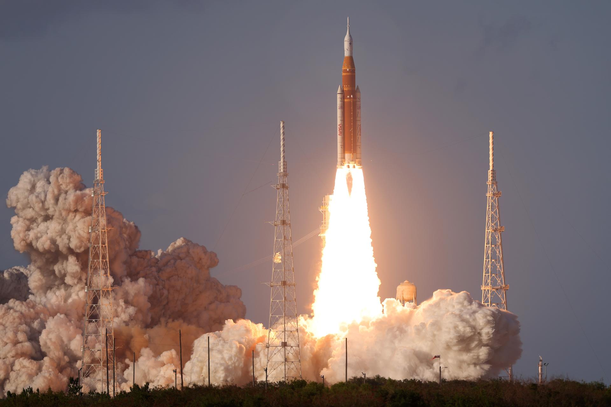
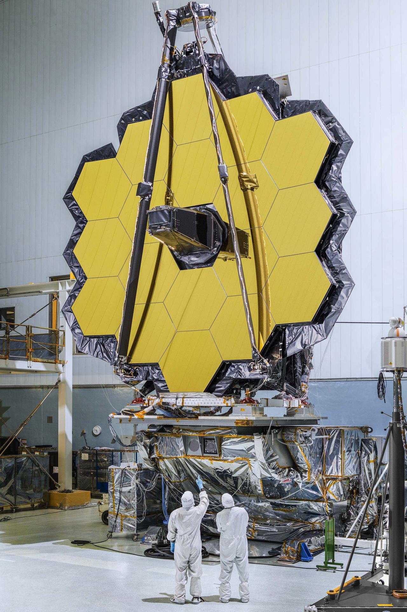
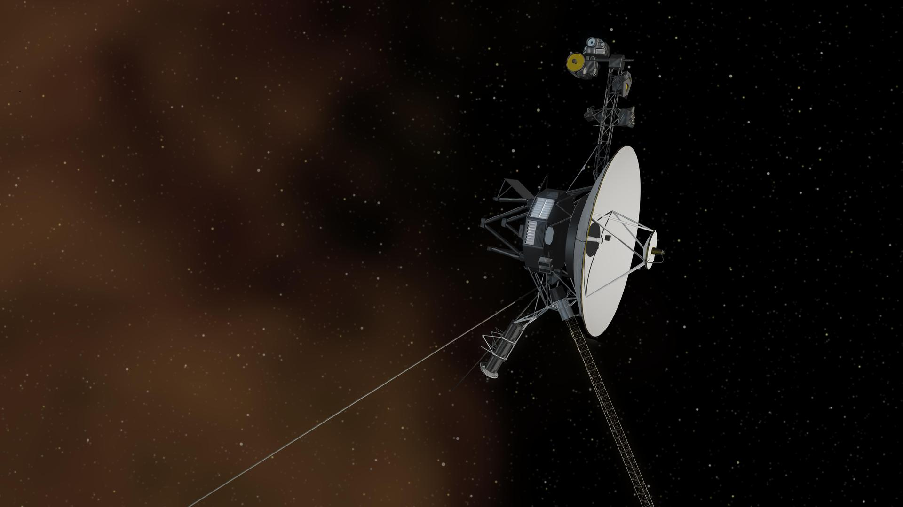

Featured Space Missions
🌗 Artemis II

Artemis II was NASA's first crewed mission back toward the moon since the Apollo era., testing the Orion spacecraft's life-support systems and crew capabilities in lunar orbit.
🛰️ James Webb Space Telescope

The James Webb Space Telescope studies the early universe using infrared technology capable of seeing farther into space than ever before.📡 Voyager 1

Voyager 1 launched in 1977 and became the first spacecraft to enter intersteller space, continuing to transmit data today.